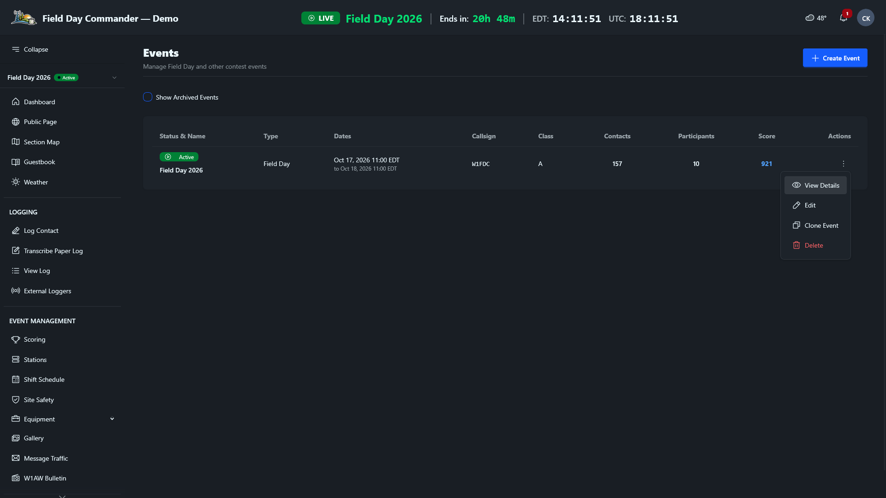

Bonuses can make up a big share of a Field Day score. A 2A club running on emergency power can earn up to 1,650 bonus points before counting GOTA. At a 2x power multiplier, that's as much as 825 phone contacts. Winter Field Day goes further: your QSO points are multiplied by the objectives you complete, plus one, so each objective you add multiplies the whole log.
Most bonuses depend on work done in the weeks before the event, like sending the invitations and writing the press release. This guide starts there, then covers how FD Commander tracks what you earn and what to gather before you submit.
Pick Your Bonuses Early
Start with your class, because it decides which bonuses you can earn. Public location, the information table, and the satellite contact are for Classes A, B, and F only. The educational activity is for Classes A and F, and for clubs in D or E with three or more participants. Each bonus on the Scoring page has a ? icon that shows the full ARRL rule, and FD Commander only lists the bonuses your class can earn.
Then give each bonus to a person. A bonus that "the club" is handling usually doesn't get done. The shift schedule already has roles for several of them: Public Information Table, Public Greeter, Safety Officer, Site Responsibilities, GOTA Coach, and Message Handler. Putting names on those shifts in Administration > Manage Schedule is a good way to make sure someone owns each job (see Volunteer Scheduling).
Bonuses That Need a Head Start
These can't be done on Saturday morning. Get them moving a month or more ahead.
- Elected official and agency visits (100 each). The visit has to come from an invitation your group sent, so send it early and follow up the week before. For the agency visit, think Red Cross, Salvation Army, emergency management, or law enforcement. ARRL officials like your SM or EC don't count for this one.
- Media publicity (100). Send a press release to local papers, radio, and TV a few weeks out. You'll need a copy of the coverage you actually got, and a post about your Field Day on a news outlet's website or social media page counts.
- Social media (100). Post about your Field Day on the club's social media page, aimed at the public. Club websites don't count, and neither do posts by individual members.
- Public location (100). Set up somewhere the public can find you, like a park, school, or shopping center, and have greeters wearing name badges ready to talk to visitors.
- Public information table (100). A table with handouts for visitors. Gather the handouts ahead of time.
- Educational activity (100). A formal, radio-related activity, like a talk on antennas or a demonstration of digital modes. Put it on the schedule and tell people when it starts, so it's clearly a planned activity and not a chat at the table.
- Youth participation (20 each, up to 100). Each participant 18 or younger who completes a contact counts. Licensed young hams can operate any station, and the GOTA station is a good place for kids who aren't licensed yet. Invite scouts, school radio clubs, and members' kids.
Bonuses You Earn on the Air
- W1AW bulletin (100). Copy the Field Day bulletin from W1AW or K6KPH. It's only sent over the air, so put a CW or digital operator on the schedule for one of the bulletin times. Save the copy on the W1AW Bulletin page in FD Commander.
- Message to your Section Manager or SEC (100). Send a formal message from your site with your club name, number of participants, location, and number of ARES operators. It has to leave the site by radio.
- Message handling (10 each, up to 100). Ten formal messages, originated, relayed, or received and delivered, in NTS or ICS-213 format. The SM/SEC message doesn't count toward the ten. Find a local net or a traffic handler who'll take your messages before the weekend.
- Satellite contact (100). One contact through an amateur satellite earns it. Check pass times ahead of time, and remember that FM satellites are limited to one completed contact per channel.
- Alternate power (100). Make at least five contacts on solar, wind, water, or batteries charged that way. The natural power transmitter counts as an extra transmitter, so take another one off the air while it runs if you don't want to change your class. The ARRL wants a separate list of those contacts with your entry. If you set up the natural power rig as its own station in FD Commander, you can find them later by choosing that station in the Station filter on View Log.
- GOTA (5 per contact, plus 100 for a coach). Classes A and F. Run the GOTA Station covers it.
Bonuses That Come From Your Setup
- Emergency power (100 per transmitter, up to 20). Every transmitter has to run off power that's independent of the commercial mains, like a generator, batteries, or solar. GOTA and the free VHF station don't count toward the total.
- Safety Officer (100, Class A) or Site Responsibilities (50, Classes B to F). Someone works through the checklist and signs it. The safety officer can start during setup. See Work Through the Safety Checklist.
- Web submission (50). Submit your entry through the ARRL's Field Day web app instead of by mail. You claim it on the ARRL's form when you submit, but mark it in FD Commander before you download your Cabrillo log so the claimed score includes it.
How FD Commander Tracks Them
You don't claim most bonuses by hand. FD Commander earns them as you use the pages you'd be using anyway:
- Emergency power comes from the event form. It counts your Number of Transmitters, as long as Commercial Power (Grid) isn't checked and no station's Power Source is Commercial Mains.
- Visits come from the guestbook. A visitor who signs in as an Elected Official or Agency earns the bonus once you verify their entry in Administration > Manage Guestbook.
- Messages come from the Message Traffic page. A radiogram you originate or relay counts once you click Mark Sent. One you receive and deliver counts as soon as you log it. The SM/SEC Message button covers the Section Manager message.
- The W1AW bulletin is earned when you save the copy on the W1AW Bulletin page.
- GOTA comes from the log.
- Safety Officer and Site Responsibilities come from the checklist under Event Management > Site Safety.
- Youth counts every member whose profile is marked Youth (age 18 or younger) and who has logged a contact, at any station or as a GOTA operator.
The rest you claim yourself, as described below. One exception: confirming a check-in on a Public Information Table shift also claims the information table bonus.
Claim the Manual Bonuses
You'll need to be an admin or event manager for this. Operators won't see the claims card.
1 Go to Administration > Events. In your event's row, click the ⋮ menu under Actions and choose View Details.


2 Find the Manual Bonus Claims card. It lists the bonuses you claim by hand that your class can earn.

3 Type a note in the box under the bonus first, then check its box. The note is saved with the claim and can't be edited afterward, so use it to say where the proof is: "Press release and Gazette article in the club Drive," or the link to your social media post.
The claim counts toward your score right away. To take one back, click its checked box and confirm. That's also how you fix a note: remove the claim, then claim it again with the new note.
Below the claims card, the Youth Participation card shows how many registered youth have logged a contact. Kids who don't have accounts can still count. Enter them in Additional non-account youth, and the total (up to five) updates when you leave the field.
Claim each bonus when it happens, not on Sunday afternoon. The person who did the work is still on site to tell you where the proof is, and everyone can watch the score climb on the Scoring page.
Watch Your Progress
Open Event Management > Scoring during the event. The Bonus Points column lists every bonus your class can earn with a Verified, Claimed, or Unclaimed badge, and totals at the top. Unclaimed is your to-do list. If it's mid-afternoon Saturday and the bulletin or the SM message is still unclaimed, now's the time to chase it.

Keep an eye on Corrections & Notices at the bottom of the page too. It flags things like GOTA contacts logged without a GOTA station configured.
Winter Field Day Objectives
Winter Field Day uses objectives instead of bonus points. Each one has a multiplier (OM), and your score is your QSO points times the sum of your objectives plus one. FD Commander uses the right list for your event's year. The list below is for 2027, which has 13 objectives worth up to OM 34. The 2026 list is a little different, and the ? icon on each objective shows the WFDA's wording.
Because objectives multiply everything, a single objective can be worth more than hours of operating. Start with the big ones:
- Three contacts on six bands (x6) and three contacts on twelve bands (x6). Six bands is within reach for most groups if you plan VHF and UHF stations alongside HF. The WFDA suggests 220 MHz. Twelve usually means bringing microwave gear. Satellite contacts don't count toward either in 2027.
- Operate the event QRP (x4). Every station stays at 10 W or less on phone and 5 W or less on CW and digital. Weigh it against the contacts you'll lose at low power.
- Operate away from home (x3). Set up more than half a mile from home.
- Cross-band repeater (x3). Set one up during setup or the event, and make three contacts through it with stations off your site. Don't log those contacts for WFD.
- Alternative power. Running 100% on alternative power (x2) also earns the station equipment objective (x1), so you get both.
- Multiple modes (x2), the SSTV image (x2), six continuous hours (x2), multiple antennas (x1), Winlink email (x1), and the WFD bulletin (x1) round out the list. For the antennas, put up at least two new ones during setup or the event, and make a contact on each. A multi-band antenna only counts once.
FD Commander earns the band, mode, QRP, and bulletin objectives from your log and the WFD Bulletin page. You claim the rest in the Manual Objective Claims card on the event page, the same way as the Field Day claims above. On the Scoring page, the Objectives column shows each one's status and an Objectives Completed progress bar.
Before You Submit
Most bonuses need proof in your submission, and it's much easier to collect while people are still on site. Before you pack up, make sure you have:
- Copies of the SM/SEC message and every radiogram you're claiming
- The bulletin copy (the Submission Sheet on the Reports page includes it if you saved it in FD Commander)
- A copy of the media coverage
- The signed Safety Officer or Site Responsibilities checklist
- A list of the natural power contacts
Then generate the Submission Sheet (or the WFD Event Summary for Winter Field Day) from the Reports page and check the bonuses against your notes. Submit Your Field Day Entry walks through the whole process.